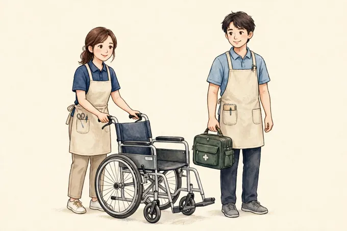

職業ギャラリー
ブラウザゲーム『6駅先の職業』に登場する60の職業を紹介します。各ページでは、その職業の人数（約○人に1人）と、現実のつながりのある職業をたどれます。

漁師
約1,000人に1人
料理人
約60人に1人
ケアマネジャー
約550人に1人

保育士
約180人に1人
大工
約420人に1人

駄菓子屋
約2万人に1軒
農家
約100人に1人

パン屋
約1万2千人に1軒
八百屋
約6,000人に1軒

トラック運転手
約150人に1人

自動車整備士
約380人に1人

看護師
約100人に1人

医者
約360人に1人
薬剤師
約390人に1人
学校の先生
約300人に1人

カメラマン
約2,500人に1人
市役所職員
約80人に1人

警察官
約480人に1人
消防士
約740人に1人

郵便配達員
約620人に1人
不動産屋
約100人に1人

ヘルパー
約60人に1人

歯医者
約1,200人に1人
獣医
約3,100人に1人
司書
約5,600人に1人
電気工事士
約330人に1人
バス運転手
約1,000人に1人

タクシー運転手
約560人に1人

建築士
約330人に1人
美容師
約210人に1人
駅員
約1,200人に1人
花屋
約2,500人に1人
コンビニ店員
約120人に1人

理学療法士
約600人に1人
栄養士
約500人に1人
魚屋
約1万2千人に1軒

パティシエ
約4,000人に1人
歯科衛生士
約800人に1人
社会福祉士
約500人に1人

配管工
約600人に1人
電車の運転手
約4,000人に1人
トリマー
約4,000人に1人
庭師
約1,200人に1人
清掃員
約200人に1人
ウェディングプランナー
約12,000人に1人
引越し業者
約2,500人に1人
宅配便ドライバー
約1,200人に1人
警備員
約230人に1人
本屋
約1万2千人に1店
パイロット
約18,000人に1人
銀行員
約350人に1人
ホテルスタッフ
約200人に1人
動物園の飼育員
約6万人に1人
塾の先生
約600人に1人
整体師
約1,200人に1人
葬儀屋
約2,500人に1人
救急隊員
約2,000人に1人
新聞配達員
約500人に1人
ペットショップ店員
約4,000人に1人
クリーニング店
約1,200人に1人
職業の人数は公的統計などの概数です。
運営：TKラボ ／ トップページ（運営者情報・お問い合わせ） ／ プライバシーポリシー